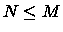
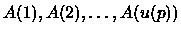

| Black Box |
Our Black Box represents a primitive database. It can save an integer array and has a special i variable. At the initial moment Black Box is empty and i equals 0. This Black Box processes a sequence of commands (transactions). There are two types of transactions:
Keep in mind that i-minimum is a number located at i-th place after Black Box elements sorting by non-descending.
| N | Transaction | i | Black Box contents after transaction | Answer |
| (elements are arranged by non-descending) | ||||
| 1 | ADD(3) | 0 | 3 | |
| 2 | GET | 1 | 3 | 3 |
| 3 | ADD(1) | 1 | 1, 3 | |
| 4 | GET | 2 | 1, 3 | 3 |
| 5 | ADD(-4) | 2 | -4, 1, 3 | |
| 6 | ADD(2) | 2 | -4, 1, 2, 3 | |
| 7 | ADD(8) | 2 | -4, 1, 2, 3, 8 | |
| 8 | ADD(-1000) | 2 | -1000, -4, 1, 2, 3, 8 | |
| 9 | GET | 3 | -1000, -4, 1, 2, 3, 8 | 1 |
| 10 | GET | 4 | -1000, -4, 1, 2, 3, 8 | 2 |
| 11 | ADD(2) | 4 | -1000, -4, 1, 2, 2, 3, 8 |
It is required to work out an efficient algorithm which treats a given
sequence of transactions. The
maximum number of ADD and GET transactions: 30000 of each type.
Let us describe the sequence of transactions by two integer arrays:
The Black Box algorithm supposes that natural number sequence is sorted in non-descending order,  and for each p ( ) an inequality is valid. It follows from the fact that for the p-element of our u sequence we perform a GET transaction giving p-minimum number from our  sequence.
Input for each dataset contains (in given order): . All numbers are divided by spaces and (or) carriage return characters.
1 7 4 3 1 -4 2 8 -1000 2 1 2 6 6
3 3 1 2